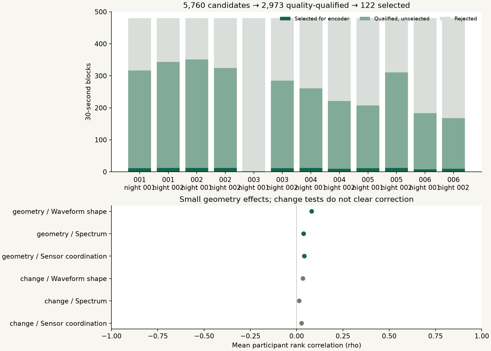

Research Notes · Experiment 010 · September 25, 2026
More usable waves.
Weak shared geometry.
An LLM’s interpretation of your brainwaves · Open methods research
The fixed pretrained EEG backbone completed 610 forward passes on 122 time-distributed segments and four controls per segment. Five people supplied enough selected data from both nights. The three geometry comparisons show weak positive alignment; the three change-profile comparisons do not clear the adjusted tests.

A frozen selection across time
We checked all 5,760 nonoverlapping thirty-second blocks in the already examined first four hours of twelve EESM23 recordings. 2,973 passed the unchanged combined numerical quality gate (51.61%, 24.775 hours). In each fixed twenty-minute interval we selected the lower temporal median qualifying block: 122 blocks, or 61 minutes. Selection used quality and time only, before encoder outputs. This adds no source recordings, people or source hours. It is a new analysis of previously exposed data.
| Source person | Night | Candidate blocks | Quality-qualified | Selected |
|---|---|---|---|---|
| 001 | 001 | 480 | 317 | 11 |
| 001 | 002 | 480 | 343 | 12 |
| 002 | 001 | 480 | 351 | 12 |
| 002 | 002 | 480 | 324 | 12 |
| 003 | 001 | 480 | 2 | 1 |
| 003 | 002 | 480 | 285 | 11 |
| 004 | 001 | 480 | 261 | 12 |
| 004 | 002 | 480 | 221 | 10 |
| 005 | 001 | 480 | 207 | 11 |
| 005 | 002 | 480 | 311 | 12 |
| 006 | 001 | 480 | 183 | 8 |
| 006 | 002 | 480 | 168 | 10 |
What the denominators mean
Quality-qualified means passing the fixed signal/model-compatibility rules, not accuracy or biological validity. 2,787 blocks fail quality; 2,851 pass but are not selected by the time rule. Rejection reasons overlap and must not be summed. All selected blocks are kept in the descriptive results. Person 003 has only one selected block in the first night, so that person's twelve selected blocks do not enter the paired estimates. Each primary result uses five people, ten recordings and 110 blocks.
Weak geometry, unconfirmed transitions
Mean geometry rank correlations are 0.0815 for waveform shape, 0.0381 for spectrum and 0.0419 for sensor coordination. All three exceed the specified cyclic-shift null with adjusted p = 0.003. These are small effects. Mean change-profile correlations are 0.0342, 0.0141 and 0.0270; adjusted p values are 0.387, 1.000 and 0.639. This run does not establish agreement in transition timing or a universal wave language.
| Comparison | Numerical view | Paired people | Contributing blocks | Mean rho | Raw p | Adjusted p |
|---|---|---|---|---|---|---|
| Geometry | Waveform shape | 5 | 110 | 0.0815 | 0.0005 | 0.003 |
| Geometry | Spectrum | 5 | 110 | 0.0381 | 0.0005 | 0.003 |
| Geometry | Sensor coordination | 5 | 110 | 0.0419 | 0.0005 | 0.003 |
| Change | Waveform shape | 5 | 110 | 0.0342 | 0.0645 | 0.387 |
| Change | Spectrum | 5 | 110 | 0.0141 | 0.2800 | 1.000 |
| Change | Sensor coordination | 5 | 110 | 0.0270 | 0.1065 | 0.639 |
What geometry and change measure
Geometry compares pairwise distances among 28 one-second patch vectors inside each selected segment: encoder cosine distances versus frozen numerical-descriptor distances. Change compares the 27 adjacent-step distances. These are continuous measurements, not discrete inflection events or diagnosed brain states. The descriptors and their normalization were frozen previously; no codebook or model is fitted here.
How the tests work
Correlations are aggregated as a median within a recording, then a mean over the two nights, then a mean over five people. We do not treat the 110 contributing blocks as 110 independent people. Each of 1,999 null replicates applies a nonzero cyclic shift within each block and repeats the same aggregation; Bonferroni correction covers all six tests. The p values are conditional on this shift construction. Nonstationary EEG can violate its exchangeability assumption, and these values are not probabilities that universal geometry exists. They also do not prove that individual patterns repeat across nights.
Waveform controls
The same selected signals are run at half amplitude, with reversed polarity, with reversed channel order, and with independent Fourier-phase randomization in each channel. These summaries compare the encoder with itself under each transformation; they do not establish cross-model agreement. The phase-control seed is 9009 plus the candidate ordinal, used solely to reproduce random phases; the original model input contains only wave values. High half-gain agreement and low phase-randomized agreement suggest sensitivity to temporal organization, while polarity and channel changes still affect the representation. This does not separate neural structure from artifacts.
| Waveform control | Geometry vs original rho | Change vs original rho | Embedding RMS displacement |
|---|---|---|---|
| gain half | 0.960 | 0.967 | 0.351 |
| polarity flip | 0.698 | 0.817 | 0.777 |
| channel reverse | 0.915 | 0.935 | 0.278 |
| independent phase | 0.033 | -0.028 | 0.613 |
Numeric input and fixed preprocessing
Inputs contain only four numeric ear-EEG channels, native microvolts, thirty seconds at 250 Hz, bandpassed at 0.3–75 Hz, notched at 60 Hz, resampled to 200 Hz and divided by 100. The source reports 50 Hz mains; the retained 60 Hz notch does not specifically remove it. Neither identity, history, sleep stage nor task labels enter the numerical functions or the encoder. Source keys remain in separate curator records for traceability and participant-level evaluation. No private NoticingMind waves or untouched participants were used.
What this cannot establish
This is the fixed CodeBrain EEGSSM continuous backbone, not the full discrete tokenizer or an LLM decoder. Its training on 19 scalp channels does not validate transfer to four ear contacts. Pretraining overlap is unknown. Shared filters, signal spectra, stable references, sensor effects and artifacts can explain agreement. The quality selection changes which parts of each night are represented; it is not a random or representative sample of all brain activity. No semantic, clinical, universal or physically calibrated Neurable claim is supported.
Next experiment
The input bottleneck is resolved for a bounded five-person comparison under this rule. Next, freeze a second compatible, independently trained encoder and cycle/burst plus artifact/reference controls on exposed data. Compare change events explicitly if testing inflection geometry. Preserve participants 007–010 and unexamined later sessions until the new method is fixed. Publish the weak and null results alongside future outcomes.
Every exclusion stays visible
| Reason | Blocks |
|---|---|
| BASELINE_QC | 1606 |
| nonfinite native samples | 867 |
| preprocessed absolute amplitude exceeds 100 uV | 1690 |
Reason counts overlap. A block can fail more than one criterion.
Full numerical results · Frozen protocol · Validation · Code and data release · Earlier Experiment 009